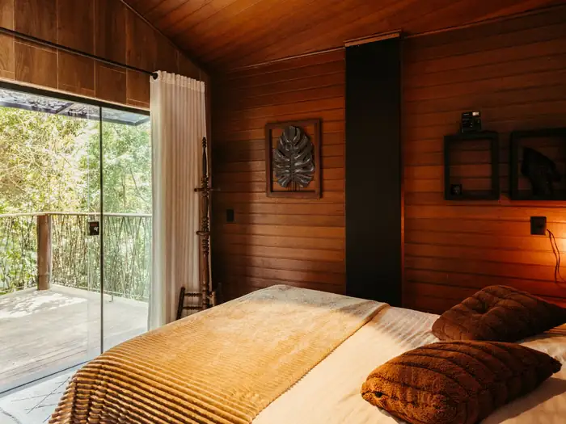
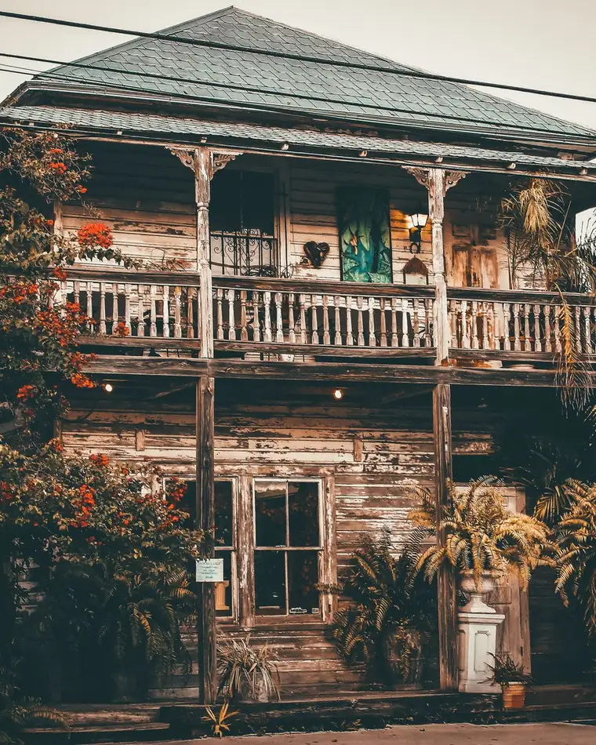
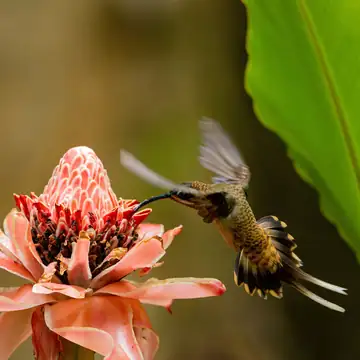
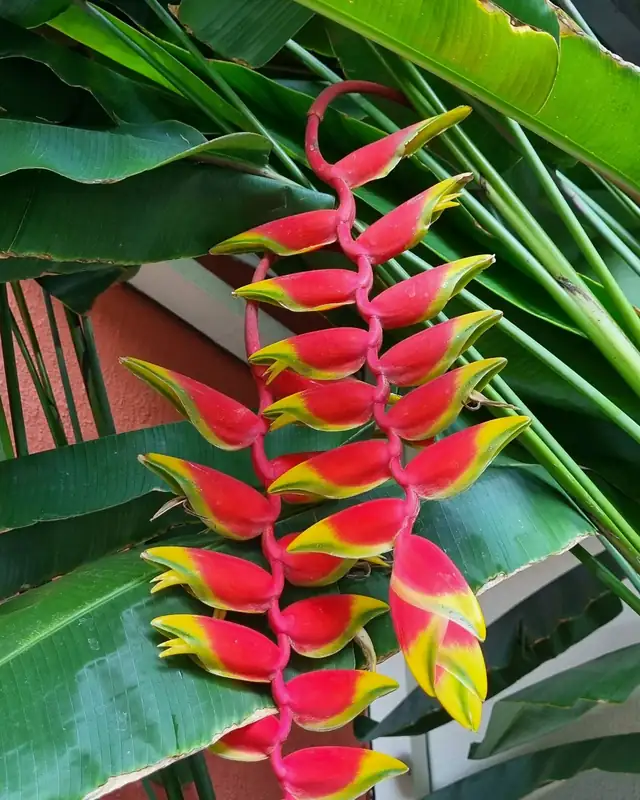
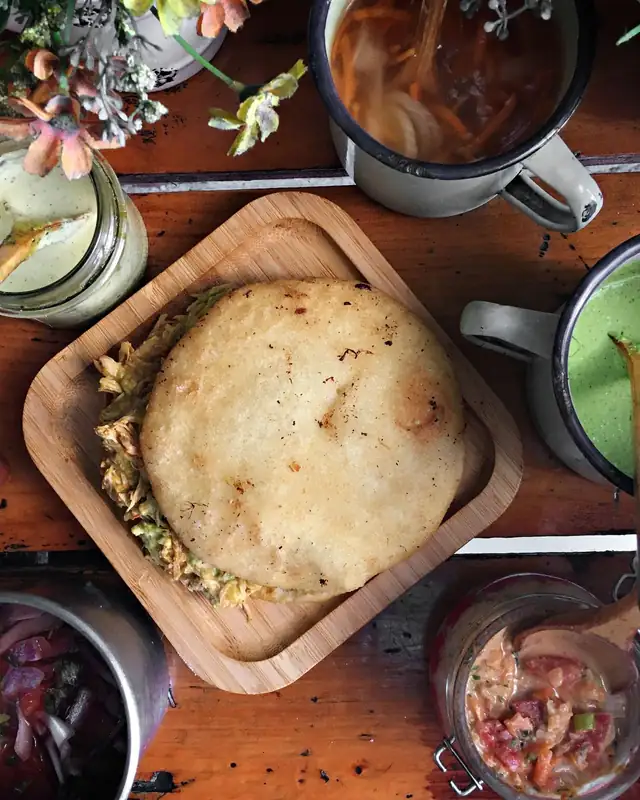
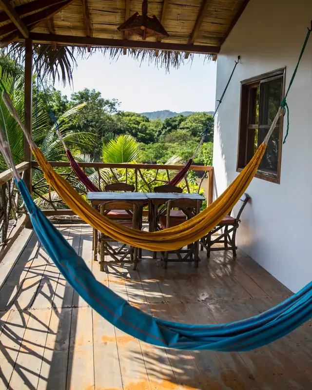
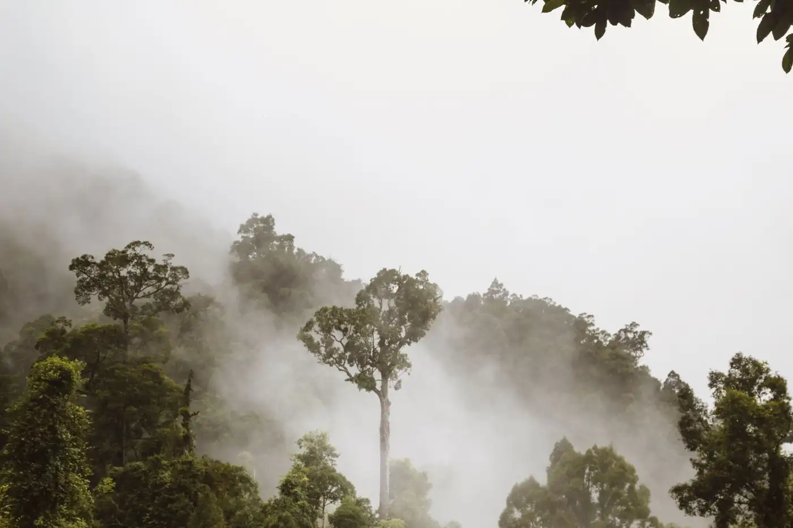
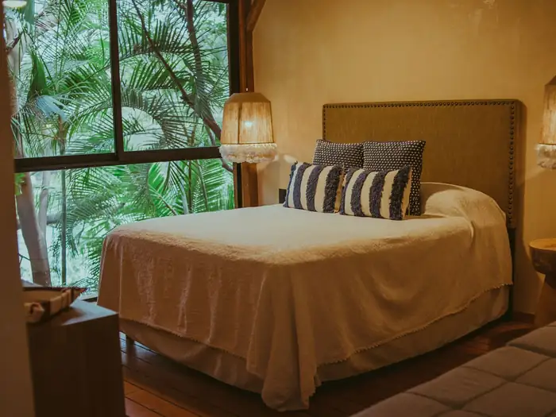
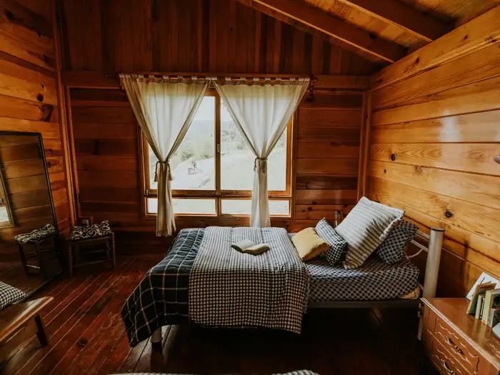
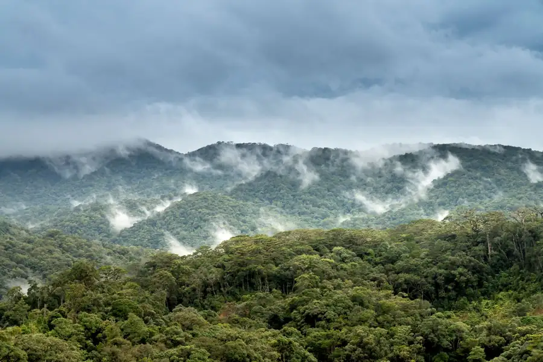

Foto de referenciaHabitación Colibrí
Con ventana al verde, para despertarse con los pájaros.
- Baño privado
- Agua caliente
- Desayuno
$35la nocheReservar
Una posada ecológica en la Sierra de Falcón
Naturaleza, comida sabrosa y el cariño de Doris y Alexis, como en familia.
4,6 en Google · 22 reseñas

Lo que más recuerdan los huéspedes son los sonidos, los colores y los olores del lugar. Toque Me provoca en lo que más le guste y se lo contamos a Doris y Alexis.
Pájaros, viento entre los árboles y nada de ruido de ciudad.
Por ejemploUn café en el corredor mientras cantan los pájaros.

Foto de referenciaFlores y plantas por todos lados, en todos los tonos de verde.
Por ejemploUn recorrido por el jardín de la posada.
Tierra mojada, flores y comida recién hecha.
Por ejemploUna caminata temprano, cuando el monte huele a mojado.

Foto de referenciaComida casera y sabrosa, de esa que provoca repetir.
Por ejemploDesayuno criollo con arepas recién hechas.

Foto de referenciaClima de montaña y tiempo para desconectarse de verdad.
Por ejemploUna tarde en la hamaca, sin apuro.
Deslice para ver los cinco sentidos.

Los sonidos, los colores y los olores del lugar.
Pájaros, flores y verde por todas partes.
Comida casera que se recuerda después del viaje.
Clima agradable de montaña y tiempo para descansar de verdad.
El cariño con que los atienden Doris y Alexis.
Resumen de lo que repiten las reseñas de Google.
Elija sus fechas aquí y cada botón de reservar ya las lleva escritas en el mensaje.
Elija llegada y salida para ver cuántas noches son.

Foto de referenciaCon ventana al verde, para despertarse con los pájaros.

Foto de referenciaFresca y tranquila, rodeada de plantas.

Foto de referenciaPara venir en familia y tener espacio de sobra.
lo reciben como en familia.
Flores de Salomé la atienden sus dueños, la Sra. Doris y el Sr. Alexis. Son ellos dos y se apoyan entre los dos. Los huéspedes lo repiten en sus reseñas: aquí lo reciben con cariño, como en familia.
Escribirles por WhatsApp
Una montaña verde de clima fresco en la Sierra de Falcón. La posada queda en la carretera de Curimagua.
Para los que les gusta explorar.
Uno de los paseos más conocidos de la sierra.
Un pueblo de montaña para pasear y comer.
La ciudad colonial y los médanos, para un día de paseo.
Si viene por primera vez, escríbanos y le explicamos cómo llegar.
Abrir en Google MapsSi su duda no está aquí, pregúntenos por WhatsApp.
La entrada es desde las 2:00 p. m. y la salida hasta las 12:00 m. Si llega antes, le guardamos el equipaje.
El desayuno está incluido. El almuerzo y la cena caseros se piden aparte, con tiempo.
Es carretera de montaña, con curvas. Maneje con calma y, si tiene dudas sobre su carro, pregúntenos antes.
Hay wifi en las áreas comunes. La señal del celular puede ser débil: es parte de desconectarse.
El clima es fresco de montaña, sobre todo en la noche. Traiga un abrigo.
Pago móvil, Zelle o efectivo en divisas.
Sí. Con el 50 % apartamos sus fechas y el resto lo paga al llegar.
Llene lo que sepa y le abrimos WhatsApp con el mensaje listo para enviar. Esta página no guarda nada.